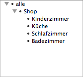
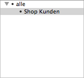

Vollständige URL des Importskriptes des Webshops. Wird kein Protokoll angegeben, wird http verwendet. Ansonsten kann auch ein https:// vorangestellt werden.
Beispiel:
www.deinshop.de/admin/fakturama_connector.php
Die Datei fakturama_connector.php muss auf dem Webserver zur Verfügung stehen. Siehe dazu Kapitel 'Installation'.
Benutzername (z.B. E-Mail) des Shop-Administrators.
Passwort des Shop-Administrators.
Kategorie, in die alle importierten Produkte aus dem Webshop abgelegt werden. Ist keine Kategorie angegeben, wird die Kategorie aus dem Webshop übernommen.
Kategorie, in die alle importierten Kunden aus dem Webshop abgelegt werden.
Kategorie, in die alle importierten Versandarten aus dem Webshop abgelegt werden.
Wird der Status einer Bestellung auf 'in Bearbeitung' gesetzt, so kann der Kunde darüber per E-Mail benachrichtigt werden. Der Status im Webshop wird ebenfalls aktualisiert.
Wird der Status einer Bestellung auf 'versendet' gesetzt, so kann der Kunde darüber per E-Mail benachrichtigt werden. Der Status im Webshop wird ebenfalls aktualisiert.
Die maximale Anzahl der importierten Produkte während eines Importvorgangs kann begrenzt werden.
Beim Import aus dem Webshop werden nur diejenigen Produkte eingelesen, die seit dem letzten Import verändert wurden. Zum Beispiel: Neuer Preis, geänderte Produktbeschreibung.
Die im Webshop hinterlegte EAN wird als Artikelnummer importiert.
Siehe auch Die Schnittstelle zum Webshop